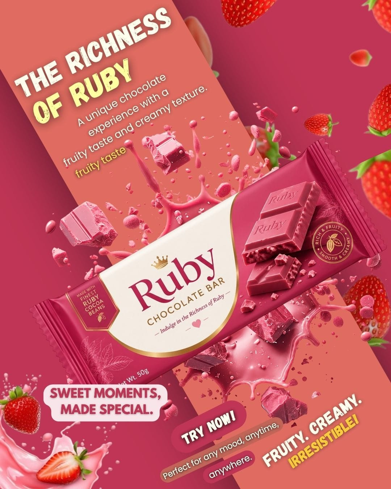
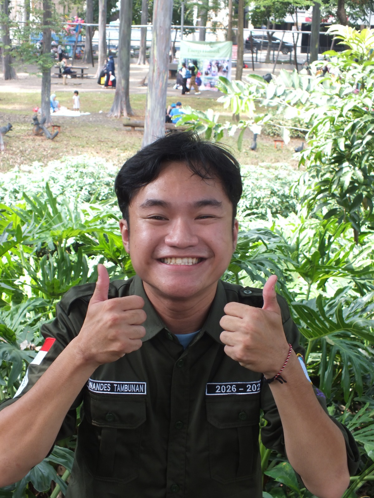

01

Desain Produk
Untuk UMKM dan sejenisnya
HALOO... PERKENALKAN NAMA SAYA
Saya adalah Orang yang suka tampilan visual |
Saya adalah mahasiswa yang tertarik pada desain grafis, UI/UX, dan eksplorasi ide kreatif. Aku suka membuat desain yang unik, menarik, dan mudah digunakan.

01. PERKENALAN
Saya adalah mahasiswa jurusan Teknik Informatika dari kampus Universitas Indraprasta yang suka akan sebuah tampilan baik itu tampilan web, aplikasi, foto atau gambar. Karna saya percaya desain atau tampilan memberikan kesan yang tidak bisa diucapkan dan ketika melihatnya saya berasa seperti memiliki warna yang indah.
Desain yang baik bukan hanya terlihat menarik, tetapi juga memiliki tujuan dan memberikan pengalaman yang menyenangkan bagi penggunanya. Melalui setiap proyek, saya ingin terus belajar, bereksperimen, dan mengembangkan kreativitas.
02 / ABOUT ME & EXPERIENCE

Saya pernah mengikuti kegiatan atau organisasi PMK (Persatuan Mahasiswa Kristen) dan dipercaya untuk memegang desain ibadah, desain ucapan hari besar, dan kebutuhan visual lainnya.
Pernah menjadi koordinator dalam acara dikampus mengenai desain, menjadi anggota dalam perlengkapan, konsumsi dll.
03 / MY WORKS

Untuk UMKM dan sejenisnya

Eksperimen warna, bentuk, dan tipografi.

Ide personal yang dikembangkan menjadi karya.
03 / GET IN TOUCH
Punya ide atau ingin berkolaborasi? Jangan ragu untuk menghubungi Saya.
Hubungi Saya ↗